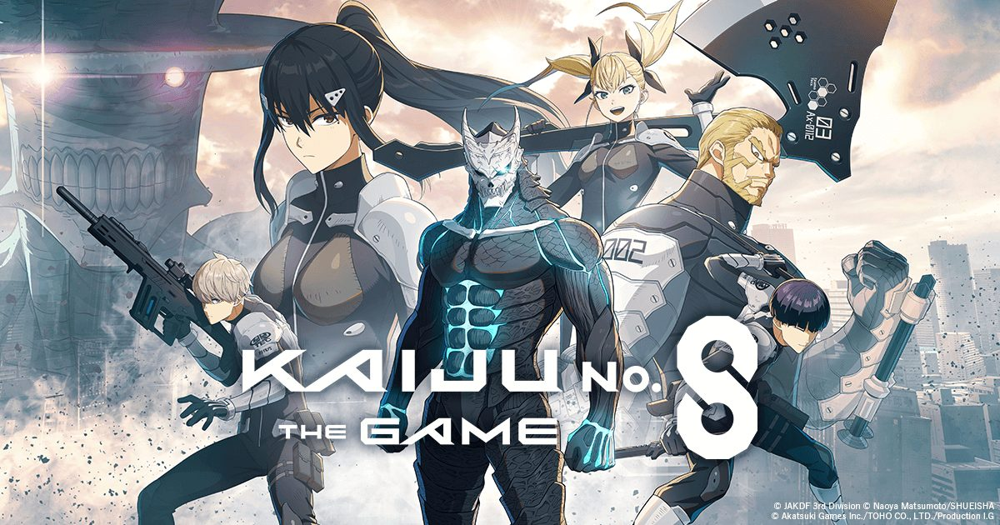

2026-08-10 · 周年观察 / 角色攻略

8月1日，由 Akatsuki Games、东宝与 Production I.G 联手打造的《Kaiju No. 8 THE GAME》正式吹响一周年号角，主题定得很有气势：「All Fronts, All Awaken（全线觉醒）」。主线推到第14章「灾厄怪兽A：最终对决」，日比野卡夫卡被次元转移能量侵蚀、四之宫莎冈独自跳入次元裂隙救场——剧情来到了纽约最终战的高潮。但比起剧情动画，更让玩家掏腰包也掏热情的，是这次周年庆的资源投放量：登录与活动合计可领超过 25,000 维度水晶，外加从 8 月 1 日持续到 10 月 8 日的每日 8 连免费抽。
先给结论：这不是一次"随便发个十连意思一下"的生日。它更像是一场官方精心设计的"召回 + 转化"战役——用海量免费抽把老玩家拉回来，用四轮属性保底和新五星怪兽8号的超脱机制刺激付费。问题只在于：这些福利落袋后，你该抽谁、囤什么、避开哪些坑？
一句话先抛：周年庆最大的隐藏考点不是"送了多少"，而是"送的资源该往哪张卡里灌"。新五星怪兽8号机制惊艳但启动慢，免费池子大海捞针，四轮属性保底又专治选择困难症。盲抽等于白嫖官方。
先把周年庆的"菜单一"次性摆出来，你会发现官方把"免费"和"付费"切得很细：
周年庆真正的强度担当，是新★5 [怪兽次元的一击] 怪兽8号。他身上那股不祥的紫色气场不是单纯换皮，而是整套「超脱（Transcendence）」系统的视觉化。
机制核心：双状态 + 双属性。常态下他是打击属性普攻手，通过自身与队友行动累积「超脱量表」；量表满后立刻拉条、变身，并进入「超脱状态」，所有技能升级为「超脱技能」，额外附加雷属性伤害、暴击伤害提升、防御贯穿。简单说，他是一名需要预热、但预热完成后能连续爆发收割单体 boss 的角色。
最被低估的被动：开局转换元素盘。他的后期被动可以在战斗开始时随机替换队伍里怪兽的火/冰/风/水盘为元素盘，大幅降低队伍拼盘的死板程度。这个效果看起来不起眼，实则是全队灵活性的质变——让你不必为了破盾硬塞某个属性工具人。
代价同样明显：他不能装备常规武器，只能依赖 Uni Parts 扩展配装；启动需要队友帮他充超脱量表，吃队伍搭配；对群体关卡表现一般；部分高阶机制还藏在重复抽取（A4/A6 等关键节点）里。白嫖玩家抽到一张就能玩，但想让他成为人权，需要更多投入。
我翻了一圈 GameWith、InGameNews、OurPlay 和国内转载，大家都在重复"25,000 水晶、每日8连、第14章、新五星怪兽8号"——信息是对的，但几乎没人把它还原成玩家的决策场景。
高度重复的：福利数字、周年主题、新角色名字、主线章节名。
没人接住的缺口：
· 「每日8连」到底该抽哪池？混合池的出货期望没人算。
· 新五星怪兽8号的超脱节奏怎么配队？哪些辅助能最快把他喂满。
· 四轮属性保底适合谁买？是微课补box还是重氪追满潜？
· 一周年是不是入坑/回坑最佳时机？福利多不等于体验顺，新手该怎么规划前两周？
《怪兽8号 THE GAME》一周年把资源放得很开，但角色设计却在往"深度"走：新怪兽8号不是抽到即战力的简单粗暴卡，而是需要理解超脱量表、拉条、元素盘转换的战术核心。这种"福利换留存 + 机制促深度"的组合，说明官方在试探IP手游能不能从"抽卡模拟器"转向"策略动作"。风险是，热闹过去后，新玩家发现练一个角色要研究的机制太多，容易流失。
· 传统漫改IP手游周年庆：多半是"双倍掉落 + 限定角色 + 福袋"三板斧，福利集中、玩法不变。
· 怪兽8号一周年：福利战线拉长到两个月，同时塞进新主线、新机制角色、四轮属性保底、新难度HELL。节奏更像长线运营游戏的一周年，而非短期冲流水。
· 结论：对IP粉是丰收季，对策略玩家有新鲜感，对休闲玩家可能信息过载。
1. 免费维度水晶该优先砸哪？ 先保新★5怪兽8号Pickup池（8/1–8/20）。他是版本主角、机制独特、长期保值；错过这波，复刻遥遥无期。
2. 每日8连怎么安排？ 当成"补图鉴 + 攒碎片"的日常，别指望稳出五星。出货血赚，没出也别上头补付费。
3. 四轮属性保底买不买？ 微课只建议在某一属性队伍只差一张核心卡时买单轮；重氪才考虑四轮全清。Round 4 是前三轮合集，性价比不如前三轮定向。
4. 新怪兽8号怎么配队？ 优先上能多次行动的辅助帮他充超脱量表；奶妈/护盾位别省，他变身前比较脆；敌人多群攻的关卡别硬上。
① 8/19 前每天登录，领满 Round 1 登录奖励的 5 张Pickup券和体力果冻；
② 每日 8 连留到上线第一件事抽，避免漏掉；
③ 新五星怪兽8号池期间集中投入水晶，但不强追满潜，A1/A4 即可解锁大部分体验；
④ 主线第14章普通难度先通一遍拿奖励，困难/HELL 等练度起来再回头；
⑤ 回坑玩家先清「1st Anniv. THE GAME Missions」，它能同时给背景、水晶和突破材料。
《怪兽8号 THE GAME》一周年送得大方、也做得复杂。25,000+水晶和两个月每日8连抽是显眼的福利，但真正决定你周年庆体验的，是你怎么把资源喂进新★5怪兽8号的超脱体系里。他不是一张抽到就自动变强的卡，而是一张需要你理解拉条、量表、元素盘和队伍节奏的战术核武。如果你是IP粉，现在回坑能赶上剧情高潮；如果你是强度党，建议集中火力先拿下怪兽8号；如果你只是路过领福利，记得——免费抽再多，也治不好选择困难症。
接下来我们会继续跟踪新五星怪兽8号的实战评测、最佳队友搭配与HELL难度打法。你想先看哪一块？评论区告诉我们。